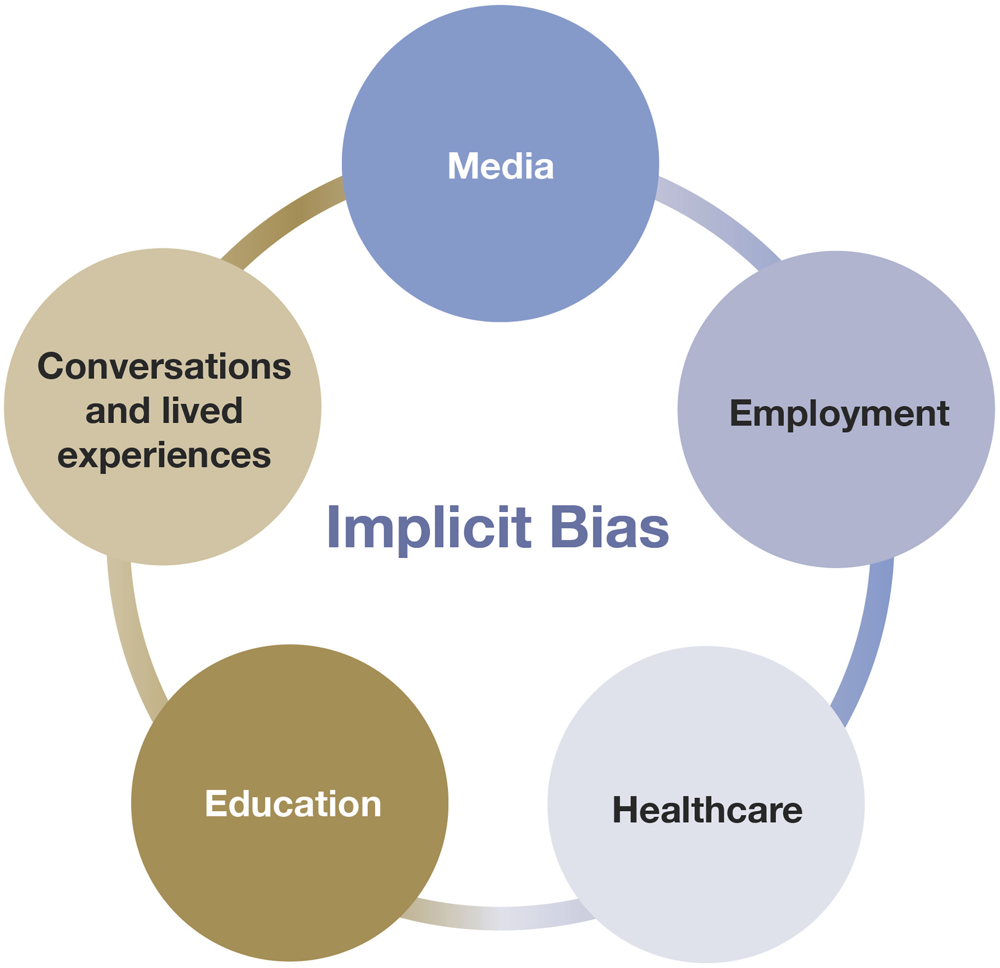

Implicit Bias Resource Guide
Implicit Bias is an unconscious belief about a social group that influences how one perceives and behaves toward others.
The Implicit Bias Test is a psychological assessment that measures implicit biases towards different social groups.
Intersectionality is the idea that one's experiences are shaped by several different factors, such as race, gender, class, and sexuality.
To learn more about these terms, explore the following resources:
- Explicit Bias Explained - Perception Institute
- Implicit Bias Test - American Bar Association
- Intersectionality - American Association of University Professors
